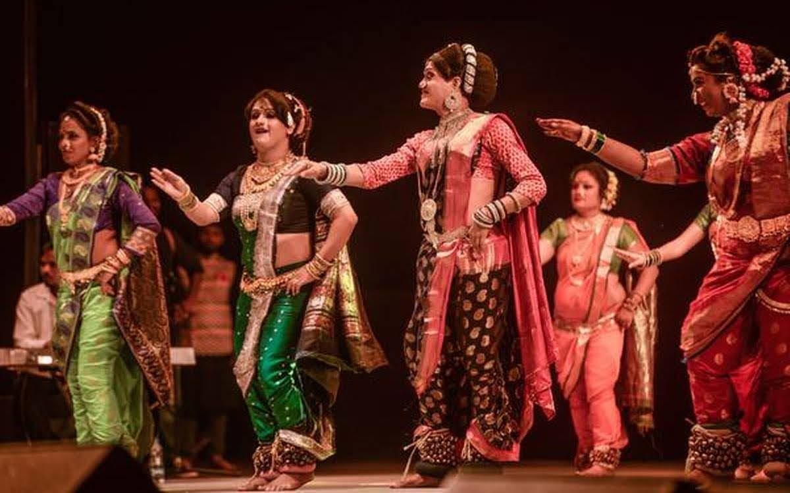

Lavani (Marathi: लावणी) is a genre of music popular in Maharashtra, India.[1] Lavani is a combination of traditional song and dance, which particularly performed to the beats of Dholki, a percussion instrument. Lavani is noted for its powerful rhythm. Lavani has contributed substantially to the development of Marathi folk theatre.[2] In Maharashtra and southern Madhya Pradesh it is performed by the female performers wearing nine-yard long sarees. The songs are sung in a quick tempo.
Traditionally, this genre of folk dance deals with different and varied subject matters such as society,[4] religion and politics. The songs in 'Lavani' are mostly erotic in sentiment and the dialogues tend to be pungent in socio-political satire.[5] Originally, it was used as a form of entertainment and morale booster to the tired soldiers. Lavani Songs, which are sung along with dance, are usually naughty and erotic in nature. It is believed their origin is in the Prakrit Gathas collected by Hala.[6] The Nirguni Lavani (philosophical) and the Shringari Lavani (sensual) are the two types. The devotional music of the Nirguni cult is popular all over Malwa.
Lavani developed into two distinct performances, namely Phadachi Lavani and Baithakichi Lavani. The Lavani sung and enacted in a public performance before a large audience in a theatrical atmosphere is called Phadachi Lavani. And, when the Lavani is sung in a closed chamber for a private and select audience by a girl sitting before the audience, it came to be known as Baithakichi Lavani. Notebly it is a kind of Mujra strictly performed for men and away from the village with no access for ladies or families to watch. The songs were written in sexually explicit double meaning
The ladies that perform lavani wear a long sari length around 9 yards. They form a bun (juda in Hindi or ambada in marathi) with their hair. They wear heavy jewellery that includes Thushi means necklace, Bormaal, Pohehaar, Zumka means earrings, Ghungru , kamarpatta (a belt at the waist), bangles , Sindoor etc. They usually put a large bindi of dark red color on their forehead. The sari they wear is called nauvari. The sari is wrapped and is more comfortable as compared to other sari types.[7]
"The main subject matter of the Lavani is the love between man and woman in various forms. Married wife's menstruation, sexual union between husband and Wife, their love, soldier's amorous exploits, the wife's bidding farewell to the husband who is going to join the war, pangs of separation, adulterous love - the intensity of adulterous passion, childbirth: these are all the different themes of the Lavani. The Lavani poet out-steps the limits of social decency and control when it comes to the depiction of sexual passion." K. Ayyappapanicker, Sahitya Akademi[8]
Surekha Punekar performing
There are also men that dance in lavani along with the ladies. They are the called nat (male dancer) usually the kinnars. These men dance in support with the lead dancer.
Although the beginnings of Lavani can be traced back to the 1560s, it came into prominence during the later days of the Peshwa rule. Several celebrated Marathi Shahir poet-singers, which include Parasharam (1754-1844), Ram Joshi (1762–1812), Anant Fandi (1744-1819), Honaji Bala (1754-1844), Prabhakar (1769-1843), Saganbhau and Lok Shahir Annabhau Sathe (1 August 1920 – 18 July 1969) has contributed significantly for the development of this genre of music. Lokshahir Bashir Momin Kavathekar is the popular present day Shaheer/ Poet of Lavani whose compositions are presented on stage by Surekha Punekar, Sandhya Mane, Roshan Satarkar and many Tamasha Troupes since the early 1980s. Honaji Bala introduced tabla in place of the traditional dholki. He also developed the baithakichi Lavani, a subgenre, which is presented by the singer in the seated position.
Satyabhamabai Pandharpurkar and Yamunabai Waikar are the popular present day exponents of Lavani.
Shringar Lavani is mostly sung and danced on the stage by a female and written by male. Vithabai Bhau Mang Narayangaonkar, Kantabai Satarkar, Surekha Punekar, Mangala Bansode, Sandhya Mane, Roshan Satarkar are well known artiste presenting Lavani on stage. Lavani can also be termed as a romantic song sung by lady who is waiting for her lover to accept her, who longs for his love. Many Lavani dancers are from some castes of Maharashtra like Mahar Kolhati, and Matang.
Marathi films played an important role in making the Lavani genre accessible to masses. Movies such as Pinjara and Natarang not only attempted to blend traditional music with social messages but also helped portray Lavani world in positive light.